Eficiencia operativa
Rediseño procesos y automatizo tareas repetitivas para reducir carga manual, evitar reprocesos y liberar tiempo del equipo para actividades de mayor valor.
Conecto estrategia, ingeniería e inteligencia artificial para resolver problemas de negocio. Desde la primera idea hasta un sistema que tu equipo pueda usar: productos digitales, segundos cerebros y automatización.
Ingeniero en Automática Industrial, con experiencia en software, inteligencia artificial y robótica. He trabajado con Dropi, Clazz Group y NSG Intelligence para mejorar procesos financieros y comerciales, y en investigación de robótica en España. Conecto visión de negocio y capacidad de ejecución para reducir trabajo manual, dar continuidad a las oportunidades comerciales y convertir ideas en productos útiles.
Entiendo cómo funciona el negocio, identifico dónde se pierde tiempo, dinero u oportunidades y defino qué vale la pena transformar. Lidero la solución desde el diagnóstico hasta su puesta en marcha, con objetivos claros: una operación más eficiente, información útil para decidir y equipos con mayor capacidad para atender y crecer.
Rediseño procesos y automatizo tareas repetitivas para reducir carga manual, evitar reprocesos y liberar tiempo del equipo para actividades de mayor valor.
Conecto atención, información del cliente y seguimiento para responder a tiempo, dar continuidad a cada oportunidad y ayudar al equipo a concentrarse en vender.
Organizo datos y conocimiento del negocio para que las personas tengan contexto, puedan identificar prioridades y evaluar resultados con indicadores claros.
Convierto ideas ambiciosas en soluciones que se pueden probar y usar. Defino prioridades, valido su utilidad con las personas y acompaño la adopción para que el cambio llegue a la operación.
Casos de eficiencia financiera, gestión comercial, conocimiento empresarial e impacto social, con mi aporte y el alcance de cada solución.
Diseñé sistemas operativos con IA que centralizan conocimiento, conectan herramientas y ejecutan procesos desde lenguaje natural. La empresa gana memoria institucional, trazabilidad y una operación que mejora con cada uso.
Construí un back-office con OCR, conciliación, conversión de divisas y archivos bancarios ACH/COBRE. El rediseño redujo 70% la auditoría manual y aceleró el ciclo de pagos.
Levanté una plataforma offline durante una emergencia para coordinar necesidades, puntos de acopio y reportes de desaparecidos. En 13 días llegó a 424 dispositivos y 4.628 visitas, con cobertura en televisión y prensa nacional.
Arquitectura de un ARM (Agentic Relationship Management): gestión de relaciones con clientes mediante agentes de IA. Conecta expedientes, catálogo, agenda y seguimiento; el Copilot apoya al asesor por voz o texto y los agentes atienden y califican prospectos.
Diseño y desarrollo de un asistente con IA para convertir ideas en proyectos digitales: investigar, crear webs, preparar entregables y ejecutar tareas con herramientas conectadas. En uso personal, con la experiencia para clientes en validación.
Integración de un asistente de IA en una experiencia turística móvil, con consultas por voz y texto y apoyo a la planificación de recorridos. Piloto diferenciado de las versiones en tiendas.
Soy Ángel Garzón Sarzosa, Ingeniero en Automática Industrial y Arquitecto de Soluciones IA. Acompaño empresas en su transformación digital: entiendo la operación, encuentro dónde está el valor, defino la hoja de ruta y convierto la oportunidad en un sistema de grado producción.
No me limito a instalar herramientas o crear un agente aislado. Construyo segundos cerebros empresariales, productos digitales y ecosistemas de automatización que conectan conocimiento, personas y procesos para mejorar ventas, productividad, control y velocidad de decisión.
Referencias profesionales y académicas: cartas de recomendación y una recomendación recibida en LinkedIn.
«entiende el negocio, traduce una necesidad en una arquitectura clara y la ejecuta.»
CEO y socio · NSG Intelligence
«Toma la iniciativa, ordena el trabajo, documenta lo que hace para que otros puedan continuarlo y eleva el nivel de quienes lo rodean.»
«Su capacidad para liderar proyectos tecnológicos desde su concepción hasta su despliegue en producción lo convierte en un activo invaluable.»
COO · Clazz Group SAS
«Demostró una autonomía y visión estructural que superó ampliamente las expectativas.»
«demostrando una notable capacidad para afrontar problemas complejos, así como perseverancia, disciplina y un sobresaliente nivel académico.»
Director del Instituto de Bioingeniería · Universidad Miguel Hernández, España
«Asimismo, evidenció gran interés en llevar a cabo todo lo que se propone y una destacada habilidad para adaptarse en poco tiempo a distintos entornos, de manera rápida y eficiente.»
«De Ángel, logro destacar su pensamiento crítico y su capacidad para integrar conocimientos de distintas disciplinas. No se queda solo en lo técnico, busca comprender los problemas y darles una solución práctica, conectando muy bien las áreas de automatización, robótica e inteligencia artificial.»
PhD en Ciencias de la Electrónica · Investigación e ingeniería
«Valoro su curiosidad, su iniciativa y su disposición para aprender. Tiene una buena combinación de criterio técnico y creatividad para aportar a proyectos de investigación y desarrollo tecnológico.»
Extractos originales en español. La versión en inglés es una traducción de estos fragmentos.
Experiencia profesional, investigación, divulgación y reconocimientos. Cada organización representa una parte de mi trayectoria y un aporte distinto.

Desarrollo de automatizaciones para marketing, eventos y operaciones, y de un asistente de voz para cobranza jurídica B2B. Integración de consultas de cartera, registro de gestiones y seguimiento para apoyar al equipo de cobranza.

Participación en la arquitectura y construcción de Stratos AI con NSG: ARM, Copilot comercial e integraciones para conectar información, atención y seguimiento.

Experiencia en la aplicación de Stratos AI para organizar prospectos, agendas y seguimiento comercial, junto con capacitación a los asesores para incorporar estas herramientas a su trabajo.
Capacitación al equipo de este corporativo para incorporar herramientas de inteligencia artificial a su trabajo. Una experiencia distinta del desarrollo del producto Stratos AI.

Participación en la propuesta tecnológica de TourCauca y en la integración piloto de un asistente de IA para consultar lugares y preparar recorridos en TourMaps GO+.
Desarrollo de automatizaciones, integraciones y agentes de IA para procesos financieros, comerciales y de comercio electrónico en Dropi / Clazz Group.
Participación como ponente de un taller de simulación de robots en Colombia 4.0, espacio de encuentro tecnológico impulsado por el Ministerio TIC.
Segundo puesto en la Cátedra de Automatización Siemens Colombia, edición 2023.1, con reconocimiento de la Universidad del Cauca.
Pasantía de investigación en Elche: integración de ROS2 y Unity 3D para coordinar brazos robóticos UR3e y UR5e en una plataforma de robótica quirúrgica.
Ingeniería en Automática Industrial. Trabajo de grado en simulación y manipulación robótica reconocido con mención honorífica.
Mi enfoque de ingeniería contempla permisos por usuario, separación de contextos y revisión humana de acciones sensibles. La trazabilidad ayuda a comprobar qué hizo el sistema y qué requiere validación.
Integro recuperación de información (RAG) para aportar documentos y contexto a las respuestas. La selección de fuentes y la revisión de resultados ayudan a reducir respuestas sin sustento; RAG no elimina las alucinaciones.
Defino qué puede hacer cada usuario y qué acciones requieren confirmación. Los controles y sus límites se validan en cada implementación.
Experiencia en emprendimiento, SaaS B2B, e-commerce, fintech y robótica aplicada.
Lidero visión técnica, arquitectura end-to-end y productos de automatización: AIOS, CRMs con call center de IA y sistemas comerciales omnicanal.
Diseño una plataforma SaaS multi-cliente de empleados virtuales para ventas y servicio, con voz, WhatsApp, automatización y tableros en tiempo real.
Tomé decisiones de arquitectura, construí productos B2B y automaticé procesos financieros y comerciales de alto impacto.
Integré comunicaciones, visualización y control en un proyecto multirrobot para investigación quirúrgica. Primer autor del manuscrito que documenta su arquitectura y un ensayo en simulación.
Explorar la investigación →Mi aporte empieza antes del código: entender el problema, cuestionar supuestos y diseñar una solución que se pueda probar, operar y mejorar.
Distingo síntomas de causas, reviso la información disponible y defino qué resultado justificaría construir una solución.
Conecto procesos, datos, personas e integraciones. Comparo alternativas por complejidad, costo, mantenimiento y límites de la IA.
Divido objetivos en entregables, priorizo dependencias y pruebo recorridos completos. Documento fallos, decisiones y opciones de reversa.
Traduzco necesidades del negocio a herramientas y explicaciones que las personas puedan usar. Acompaño al equipo para incorporar el cambio.
Herramientas y prácticas utilizadas en proyectos; el alcance depende de cada implementación.
Cada proyecto nace de un dolor real del negocio. Acá está el problema, la solución que construí y el impacto.
La operación comercial conectada: clientes, equipo, propiedades y próximos pasos en un mismo sistema.
La información del cliente queda repartida entre chats, llamadas y notas. El equipo pierde tiempo actualizando el CRM, buscando propiedades y reconstruyendo acuerdos; la dirección no siempre sabe quién debe actuar ni qué oportunidad necesita atención.
Un ARM (Agentic Relationship Management) que conecta información comercial y agentes de IA para atender prospectos y dar continuidad al seguimiento. El Copilot permite al asesor registrar clientes, actualizar notas, consultar propiedades y coordinar citas por voz o texto. El equipo conserva la responsabilidad de negociar, validar condiciones y formalizar el cierre.
En Duke del Caribe, el corte del 9 de junio al 15 de septiembre de 2026 registró 1.495 prospectos, todos con asesor asignado. El equipo cuenta con responsables, contexto y seguimiento visibles para organizar su gestión. Esta cifra refleja actividad registrada, no ventas cerradas ni un aumento de ingresos demostrado.
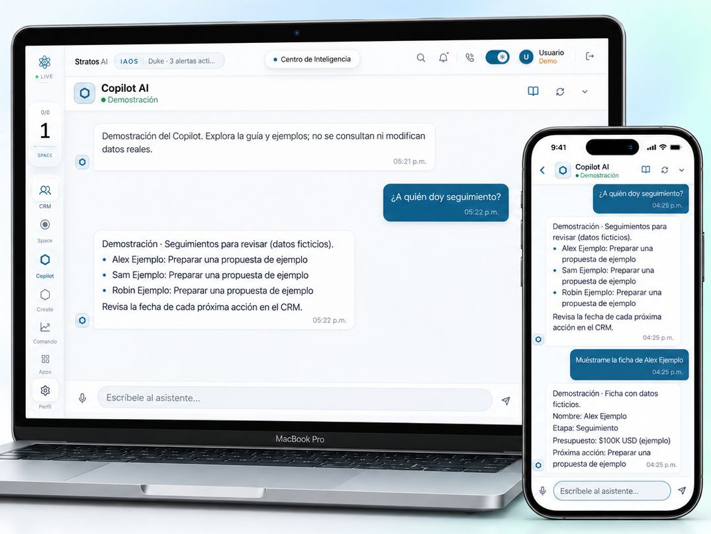
Copilot en navegador y iPhone · demostración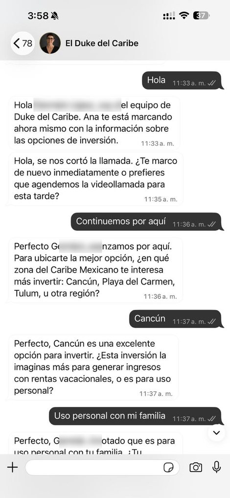
se corta la llamada y sigue por WhatsApp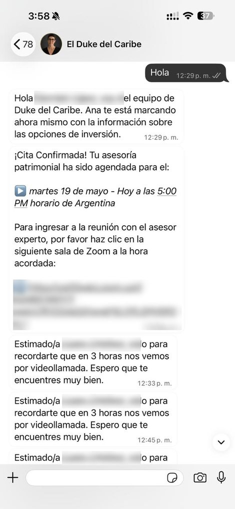
y termina agendando la videollamadaDe «quiero hacerlo» a tener algo real para mostrar.
Tienes una idea de negocio o un proyecto por sacar adelante, pero faltan tiempo, apoyo o conocimientos para empezar. Investigar, crear una página y preparar una propuesta pueden convertirse en barreras antes de dar el primer paso.
Boro AIOS es un asistente con inteligencia artificial que te ayuda a pensar, crear y ejecutar. Le explicas lo que necesitas por voz o texto y trabaja con el contexto de tu proyecto y las herramientas conectadas para convertirlo en avances concretos.
En mi uso personal lo utilizo para construir y actualizar páginas web, investigar, preparar propuestas y archivos, y operar automatizaciones. El valor está en avanzar con un trabajo que puedes revisar, corregir y utilizar.
Si quieres emprender y no sabes por dónde empezar, puedes trabajar con Boro para definir qué ofrecer, a quién ayudar y cómo presentar tu propuesta.
A partir de ahí, te ayuda a investigar opciones, preparar el contenido y construir una página para mostrar tu negocio, según las herramientas disponibles.
Tú decides el rumbo. Boro te ayuda a convertir la idea en primeros pasos y entregables; no garantiza ventas ni resultados empresariales.
Una propuesta para un cliente, una presentación, una hoja de cálculo o una web: puedes pedir un resultado, revisar lo que entrega y solicitar ajustes en la misma conversación.
Con las conexiones autorizadas, también puede trabajar sobre código, aplicaciones y automatizaciones. Las acciones en tu computador requieren el agente instalado y el equipo conectado.
Te informa del avance y de lo que falta, y señala cuándo necesita una decisión o intervención tuya.
Puedes explicar una idea por voz desde el celular y consultar el avance desde otro dispositivo. La conversación y el seguimiento del trabajo se reúnen en una misma interfaz.
Las tareas de la nube pueden continuar sin mantener tu PC encendido. Si el trabajo depende de tu computador, debe permanecer encendido y conectado.
El contexto de tus proyectos, tus preferencias y los documentos de referencia ayudan a retomar el trabajo y dar continuidad a lo que estás construyendo.
Boro ya forma parte de mi trabajo cotidiano. La rapidez de respuesta, la conversación por voz y la transcripción son parte de la experiencia que quiero llevar a más personas.
El producto para clientes sigue en desarrollo y uso piloto: se están validando la instalación y las tareas completas en cada entorno. Las capacidades dependen de las herramientas y permisos de cada cuenta.
Del mensaje de WhatsApp al pedido organizado en cocina.
Cuando entran varios pedidos a la vez, responder WhatsApp compite con atender mesas y coordinar la cocina. Audios, adiciones y direcciones quedan repartidos en el chat; un mensaje sin responder puede costar una venta y un pedido mal transcrito termina en reclamos o preparaciones equivocadas. Revisar comprobantes a mano suma otra carga al equipo.
Un asistente de ventas por WhatsApp que entiende texto y notas de voz, comparte el menú, recoge productos y adiciones y calcula el total con los costos de envío configurados. Revisa los datos visibles del comprobante con visión artificial y organiza la orden en el panel de cocina. Las dudas, quejas y excepciones se derivan al equipo.
El restaurante puede dar continuidad a los pedidos mientras su equipo atiende el local, con menos transcripción manual y una vista compartida entre atención y cocina. La revisión de una imagen ayuda a detectar inconsistencias; la confirmación del abono depende del canal bancario disponible.
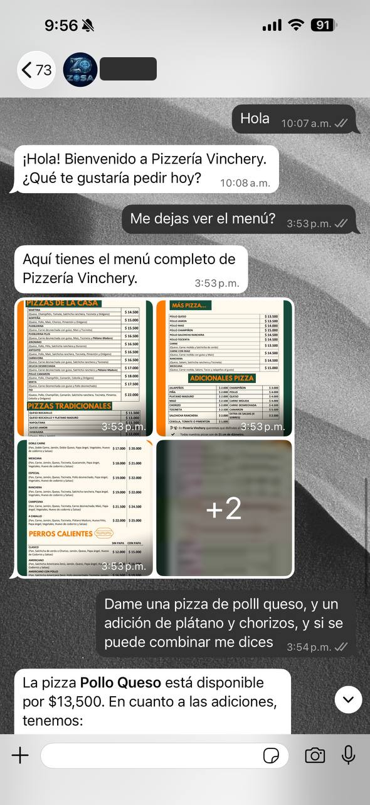
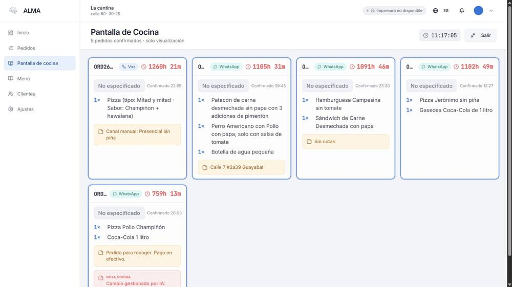
cocina en tiempo real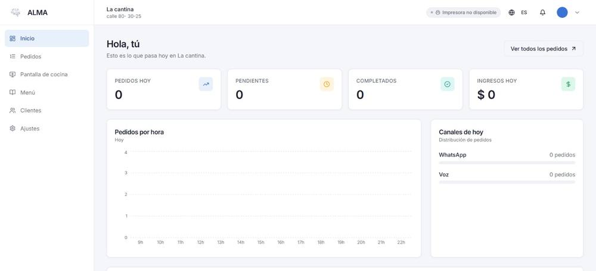
tablero · ingresos · canalesRecuperar la intención de compra y confirmar antes de pagar el envío.
La tienda ya pagó por atraer al comprador, pero el carrito queda abandonado sin seguimiento. En contraentrega, despachar con una dirección incompleta o sin confirmar que el cliente recibirá el pedido puede terminar en un rechazo: se pierde la venta y se asume el costo del envío y la devolución. Hacer ese seguimiento uno por uno limita cuántos pedidos puede gestionar el equipo.
Dos agentes coordinados con la operación de e-commerce: uno retoma carritos por WhatsApp, responde dudas del producto y ayuda a continuar la compra; el otro confirma productos, datos de entrega e intención de recibir antes del despacho. La conversación y el resultado quedan registrados para que el equipo atienda las excepciones.
Permite trabajar ventas que antes quedaban sin seguimiento y detectar pedidos dudosos antes de enviarlos. El equipo conserva el contexto y prioriza los casos que requieren intervención. El objetivo es recuperar oportunidades y evitar fletes innecesarios; los resultados se miden según la operación de cada tienda.
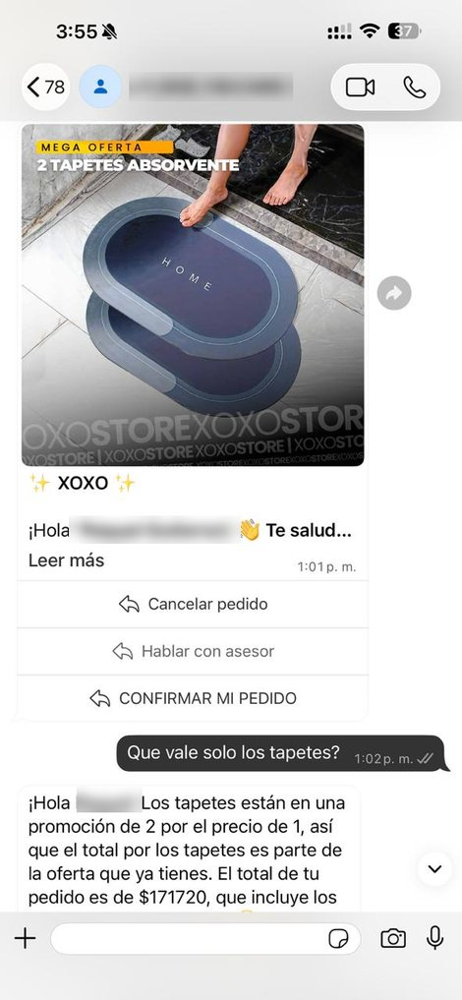
Conversación de confirmación: responde dudas del producto.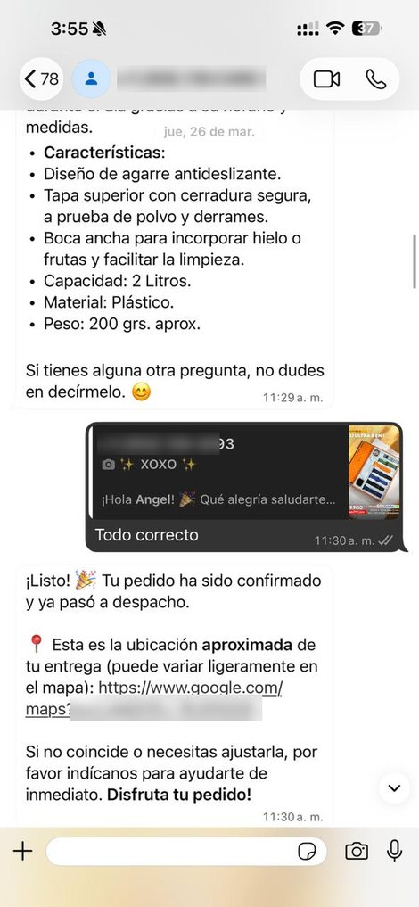
El cliente confirma y el pedido queda listo para despacho.Descubrir un destino, entender su historia y organizar el recorrido.
Un turista encuentra listas de sitios, pero todavía tiene que decidir cuáles le interesan, cómo conectarlos y qué vale la pena conocer de cada uno. Al cambiar de aplicación entre recomendaciones, mapas e historias pierde contexto y tiempo del viaje. Los destinos también necesitan hacer visible su oferta más allá de los lugares de siempre.
TourMaps GO+ reúne el catálogo turístico, mapas, audioguías y contenido del destino. Mi trabajo amplía esa base con un asistente por voz y texto para consultar lugares, explorar opciones y preparar recorridos, conectado con la experiencia de mapa y Mi Plan.
La propuesta convierte información dispersa en una experiencia de descubrimiento y planificación dentro de la app. Mi aporte abarca la integración del asistente, el acceso al catálogo y la coordinación con rutas y planes. Hay una app pública y un desarrollo piloto; las capacidades de cada versión se verifican por separado.
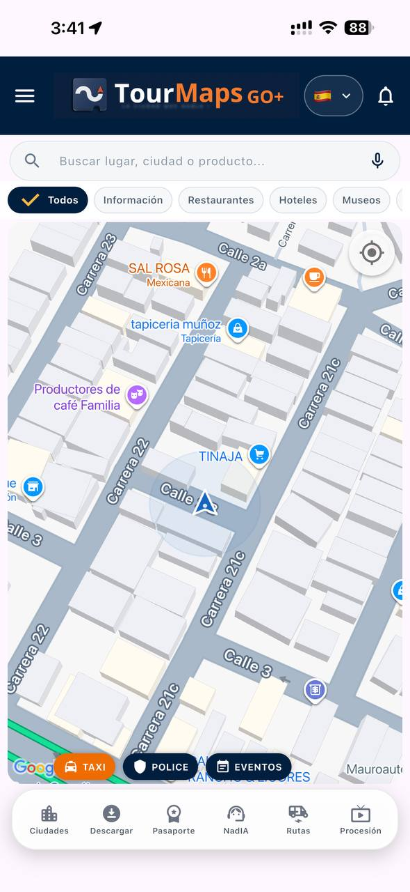
Trabajo en la integración móvil en Flutter y en el servicio del asistente: consultas al catálogo con fichas, fotos y enlaces, conversación y preparación de rutas y Mi Plan. El desarrollo cubre Android e iPhone, con pruebas separadas por canal.
Los enlaces llevan a las aplicaciones oficiales. El asistente y las versiones de prueba para Android e iPhone evolucionan por separado de las tiendas. La disponibilidad de voz, ubicación y rutas depende de la versión instalada y de su validación en el dispositivo.
TourCauca es el antecedente regional en cuya estructuración conceptual y tecnológica participé, una iniciativa reconocida por su aporte al turismo.
IA anti-fraude bancario que vive dentro de WhatsApp.
El fraude por WhatsApp , comprobantes falsos, phishing, suplantación, le cuesta dinero y confianza a bancos y comercios. Verificar a mano es lento y se cuelan los engaños.
Un ecosistema de IA híbrida sobre WhatsApp que verifica identidad, valida pagos, controla reputación y gestiona planes de pago, detectando operaciones sospechosas en tiempo real. La primera solución de IA híbrida en WhatsApp para prevención de fraude bancario en Colombia.
Frena el fraude antes de que golpee y le da trazabilidad a cada transacción: convierte un canal de riesgo en uno verificado y auditable.
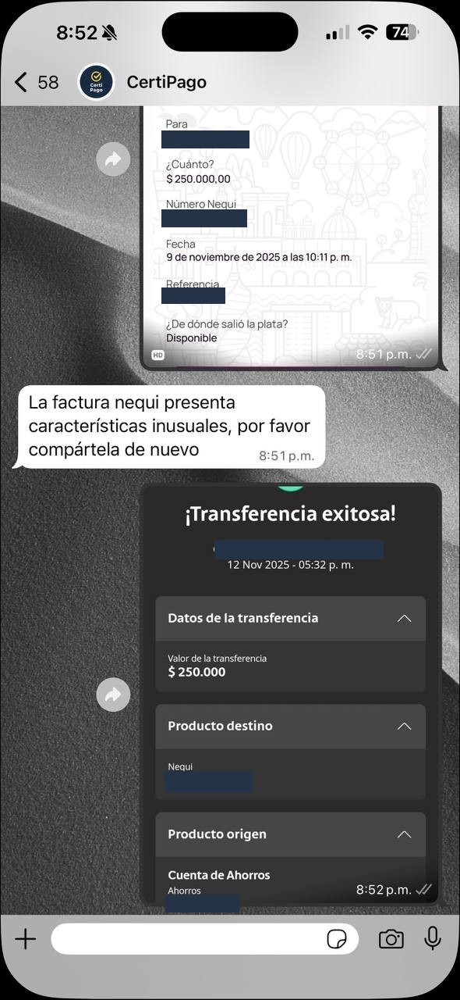
Memoria perfecta y operación clara para empresas, agencias y freelances.
Proyectos, clientes, procesos y lecciones quedan regados entre apps, chats y documentos. Con cada cliente nuevo o cambio de equipo se reinventa la rueda y se pierde contexto , y plata, .
Un segundo cerebro digital que captura, organiza y conecta todo el conocimiento del negocio en un solo lugar vivo, accesible por lenguaje natural desde el celular o el PC, y que además ayuda a operar el día a día.
Claridad total y memoria perfecta: onboarding inmediato, decisiones más rápidas, nada se pierde y cada persona rinde como si tuviera un asistente que se sabe todo el negocio.
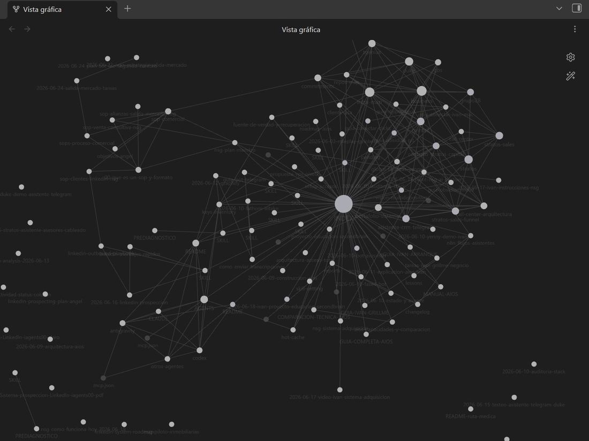
segundo cerebro · vista de conocimientoUn empleado virtual para atender clientes por teléfono y WhatsApp.
Un negocio puede dejar consultas sin responder cuando su equipo está ocupado o fuera de horario. Preguntas frecuentes, calificación inicial y coordinación de citas consumen tiempo de atención.
Un asistente de atención y ventas que conversa por teléfono con voz natural y por WhatsApp: responde preguntas, recoge necesidades, atiende objeciones y apoya el agendamiento según la configuración del negocio. Conserva transcripciones, resúmenes y clasificación de las conversaciones.
Permite dar continuidad a la atención y dejar cada conversación organizada para el equipo, con un tablero para revisar la actividad. Su foco es el contacto con el cliente; Stratos integra además la gestión comercial, el catálogo y el trabajo del asesor. ALMA se adapta a clínicas, inmobiliarias, restaurantes y e-commerce.
La ayuda que llega a quien de verdad la necesita: sin duplicarse ni perderse.
Tras una emergencia , un terremoto, una inundación, la ayuda se desborda y se descoordina: a un punto le sobra comida mientras a otro le falta todo, las donaciones se pierden o se repiten, y las familias buscan a sus desaparecidos a ciegas, sin saber quién los vio ni dónde.
Una app web (PWA) instalable que funciona sin señal, con un mapa vivo de necesidades: cada punto muestra qué falta y qué sobra, cruza lo que sobra en un lado con quien lo necesita más cerca, registra las entregas con foto, lleva las cuentas y aportes, y tiene una sección de personas desaparecidas donde cualquiera puede reportar si vio a alguien o dar información a la familia.
Se levantó y salió al aire en plena emergencia. En sus primeros 13 días (14 al 27 de agosto de 2026) recibió 207 reportes de personas desaparecidas, la usaron 424 dispositivos distintos con 4.628 visitas, y coordinó 32 necesidades y 14 puntos de acopio en 11 municipios. Salió en televisión nacional , 90 Minutos, Telemedellín y Cable Noticias, y en prensa.
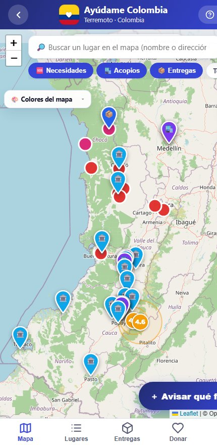
el mapa en vivo · puntos realesBack-office contable automatizado: OCR de facturas, conciliación, conversión de divisas y archivos de pago ACH/COBRE → redujo la auditoría un 70% y aceleró los pagos.
Recepcionista digital que responde consultas sobre precios, horarios y cobertura, agenda citas y envía recordatorios. Centraliza la atención inicial para que la clínica dé seguimiento a sus pacientes.
Un coach por Telegram que acompaña objetivos, registra avances y envía recordatorios. Reúne seguimiento y hábitos en una conversación de uso cotidiano.
Ecosistema e-commerce con soporte 24/7 + motor de reportes (operativos, cierre mensual, detección de envíos sin movimiento) → logística bajo control.
Agentes que consultan catálogos y un motor de precios para preparar cotizaciones técnicas. El experto revisa y aprueba la propuesta con menos búsqueda y transcripción manual.
Inteligencia de productos: detecta y analiza productos ganadores → decisiones de catálogo con datos, no corazonadas.
Registra gastos e ingresos por lenguaje natural, consulta saldos y recuerda obligaciones. Ayuda a ordenar las finanzas personales y revisar qué pagos siguen pendientes.
Asistente de voz para gestionar cartera B2B: consulta obligaciones, conversa con el cliente y registra el resultado de la gestión. Conecta llamadas, enlaces de pago y seguimiento en el CRM para dar continuidad al trabajo del equipo de cobranza.
Cuando resolver una novedad exige varias llamadas y copiar datos, la operación pierde continuidad. El agente consulta pendientes, recoge información por teléfono y registra el resultado para que el equipo continúe la gestión.
Convierte solicitudes registradas en Notion en contenido preparado con IA y actualiza su estado. Conecta la planificación con la ejecución para reducir el paso manual entre la idea y la pieza.
Coordina información de eventos, piezas gráficas y comunicaciones por correo y WhatsApp desde una base compartida. Reduce la copia de datos entre herramientas al preparar y difundir cada evento.
Conecta avisos de clips y datos de video con Notion y hojas de seguimiento. El equipo puede saber qué material llegó y mantener actualizado su registro sin revisar y copiar cada aviso a mano.
Consulta estados de envíos de Coordinadora e Inter Rapidísimo y actualiza el seguimiento en hojas de cálculo. Ayuda a localizar novedades sin abrir y copiar cada guía de forma individual.
Asistente de Telegram para estudiar y conversar en inglés, con ejercicios y lecciones proactivas. Lleva la práctica al canal que ya usa el estudiante y ayuda a darle continuidad.
Investiga empresas según el perfil y la ciudad, prepara una carta adaptada y entrega cómo postular por Telegram. Reduce la investigación repetitiva y deja al candidato revisar y decidir su postulación.
Reúne tiendas y productos de moda por ciudad para que el comprador descubra opciones locales desde un catálogo común. Un desarrollo web y móvil con búsqueda, fichas de producto y herramientas para comerciantes.
Conecta la información del negocio con la creación de una web y su atención por WhatsApp. El cliente revisa la propuesta y puede pedir cambios por chat, sin depender de un editor técnico para explicar lo que necesita.
30+ proyectos y soluciones: productos, automatizaciones, pilotos y desarrollos académicos. Cada caso corresponde a una solución; las versiones y los flujos que la componen no se cuentan por separado.
«Ingeniero y creador de la plataforma»
La plataforma que levanté en plena emergencia salió en tres canales nacionales. Esta es la nota completa: qué resuelve, cómo funciona y a quién le está llegando.
Ver la plataforma ↗2 minutos · con audio
En Instagram ven una publicación. En tu web encuentran qué ofreces, para quién es, ejemplos de tu trabajo y cómo dar el siguiente paso. Organizo esa información para que tu negocio se entienda y sea fácil consultarte, cotizar o reservar.
Una página con tu identidad, pensada para celular y conectada con WhatsApp. Puedes compartirla en tus redes, propuestas o campañas y pedir ajustes por chat.
Revisas tu web antes de pagar. Si no te gusta, no pagas.
Antes de los agentes, la base dura: visión por computador, redes neuronales y robótica.
Red neuronal (CNN) que detecta neumonía en rayos X con 86% de precisión.
Pipeline de anotación de imágenes con Meta SAM.
Medición sin pinchazos con Arduino + Python.
Colección de proyectos de visión en Python / MATLAB.
App web de vocabulario construida en Next.js.
Investigación en España: comunicaciones, gemelos digitales y control multirrobot.
Ver investigación en España →Durante mi estancia de investigación en España trabajé en un reto de integración multirrobot: conectar una interfaz virtual, las comunicaciones y el control de brazos robóticos para experimentar con movimientos en robótica quirúrgica.
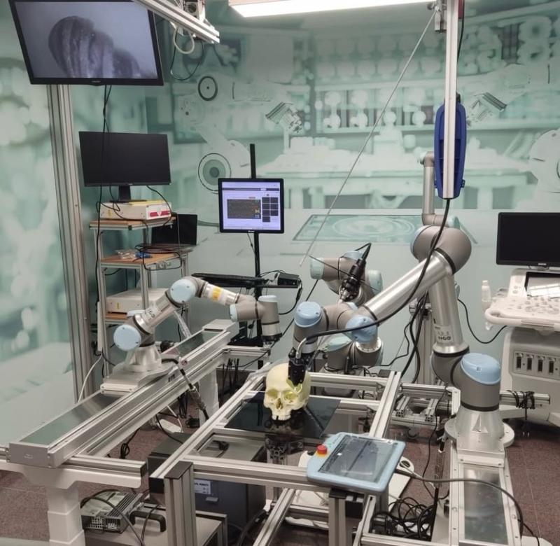
El problema de ingeniería
El reto iba más allá de representar un robot en pantalla. Había que conectar la interfaz con los brazos UR3e y UR5e y sus simuladores, recibir el estado de cada uno y dirigir los movimientos al robot correcto.
Desarrollé componentes de gestión por robot, envío de instrucciones y registro de posiciones y trayectorias. La integración reúne visualización, comunicación y control en un entorno común de experimentación.
El resultado es una base para estudiar movimientos y coordinación multirrobot, enlazando gemelos digitales con equipos físicos o simulados.
Integrar Unity, ROS2 y las interfaces de Universal Robots para intercambiar estados e instrucciones entre visualización y control.
Organizar conexiones, dominios y puertos por robot, manteniendo diferenciadas sus órdenes y sus datos dentro de una interfaz común.
Registrar y cargar secuencias, transformar coordenadas y unidades y relacionar el movimiento solicitado con el estado recibido del robot.
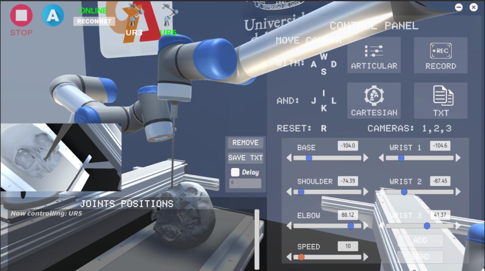
Evidencia del trabajo
El manuscrito del proyecto documenta una trayectoria endonasal de cinco puntos definida en Unity y ejecutada por un UR3e simulado en URSim, con comparación entre las posiciones de referencia y las ejecutadas.
Soy primer autor del manuscrito Digital Twin of a multi-arm surgical robotic system and integration into ROS2, elaborado con otros cuatro investigadores de Unicauca y UMH.
Aporte a la investigación quirúrgica
La integración permite definir trayectorias, observar los gemelos digitales y contrastar movimientos en simulación. Aporta una herramienta de experimentación para investigar estrategias de manipulación antes de avanzar a nuevas validaciones.
Aplicación del enfoque a la industria
La separación por equipo, la lectura de estados y los adaptadores de órdenes son principios transferibles a celdas industriales. Esta experiencia respalda mi trabajo en arquitectura de integración; cada fabricante y controlador requiere su propia validación.
Unity y C# gestionan la interacción y los modelos digitales. RosBridge conecta la interfaz con ROS2 mediante JSON sobre WebSocket. Los nodos y adaptadores de control reciben estados y envían instrucciones a los robots o a URSim, con configuración diferenciada por brazo.
Mi aportación documentada incluye componentes de gestión multirrobot, envío de órdenes y registro de posiciones y secuencias. El proyecto es un trabajo de investigación en equipo.
El repositorio conserva la implementación histórica; su revisión actual identifica ajustes pendientes para reproducirla. La guía KUKA es material académico de arquitectura y comunicación, con integración física futura.
Investigación académica: ensayo de trayectoria en simulación. Las aplicaciones quirúrgicas e industriales requieren validaciones específicas.
La plataforma que levanté en plena emergencia salió en 90 Minutos, Telemedellín y Cable Noticias, y en prensa nacional. Desde entonces ha despertado el interés del Senado de la República, de la Alcaldía de Popayán y de entidades de respuesta como la Cruz Roja. La meta para final de año: ser la herramienta sin ánimo de lucro número uno del país para desastres naturales. 90 Minutos · Pulzo
Participación registrada en la estructuración conceptual y tecnológica de TourCauca, iniciativa condecorada por su aporte al turismo regional.
Ponente de taller en el mayor evento nacional de tecnología. Nota Universidad del Cauca ↗
Por trabajo de grado.
2.º puesto nacional: "Noche de los Mejores".
No. Tú aportas el conocimiento de tu negocio. Yo traduzco el problema a una propuesta técnica y te explico las decisiones en lenguaje claro.
Eso es lo primero que revisamos. Comprobamos sus integraciones, accesos y limitaciones antes de acordar qué vamos a construir.
Depende del problema, el alcance y las integraciones. Después de entender tu caso, recibes una propuesta con entregables, costos de terceros y condiciones de soporte.
Recibes documentación y orientación para usar el sistema. El mantenimiento y las mejoras futuras se acuerdan como parte de la propuesta.
Hay talento que no encuentra una oportunidad y problemas de la sociedad y del planeta que siguen esperando soluciones. Quiero ayudar a conectar ambos.
Construyo tecnología para que más personas puedan emprender, resolver problemas reales y, con el tiempo, generar trabajo para otras. La formación importa; también hacen falta herramientas y oportunidades para llevar lo aprendido a la práctica.
Boro AIOS nace de esa convicción: reducir las barreras para pasar de una idea a un proyecto digital. No prometo resultados ni éxito empresarial; mi compromiso es facilitar el camino para construir.
Conoce el propósito de Boro →Da igual si eres una persona, un freelance, un emprendimiento, una empresa o un grupo de investigación , y no importa cuánto sepas de IA, : para cada nivel hay una solución que te pone por delante del mercado. Agenda un diagnóstico y lo vemos juntos.
Estoy abierto a proyectos, consultorías, alianzas y oportunidades donde pueda asumir un problema complejo, darle estructura y llevar la solución hasta producción.